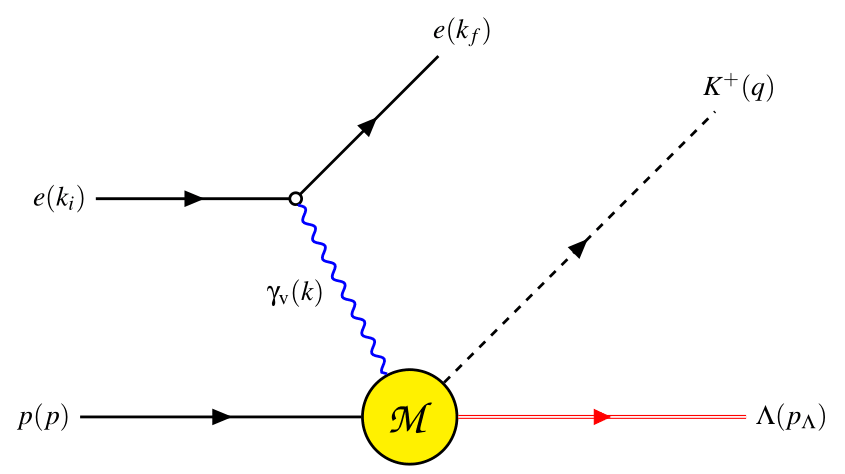

My undergraduate research is on kaon production. What is a kaon? Kaons (K mesons) are a group of four mesons
distinguished by a unique strangeness quantum number. The four kaons are \\( K^+ \\).
$$e(k_i)+p(p)\to e(k_f)+K^+(q)+\Lambda(p_\Lambda)$$
$$\gamma_\text{v}(k)+p(p)\to K^+(q)+\Lambda(p_\Lambda)$$

Feynman Diagram of Kaon Electroproduction off a Nucleon (Proton).